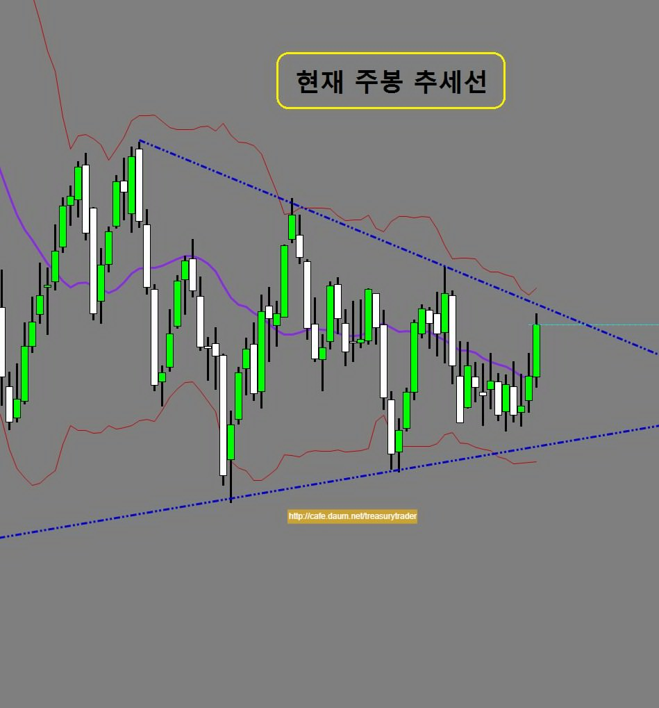
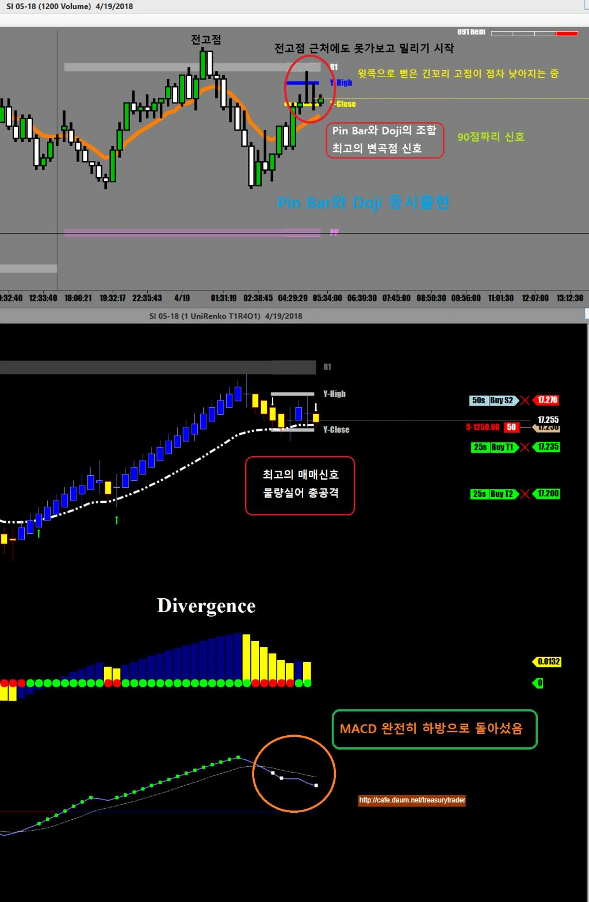
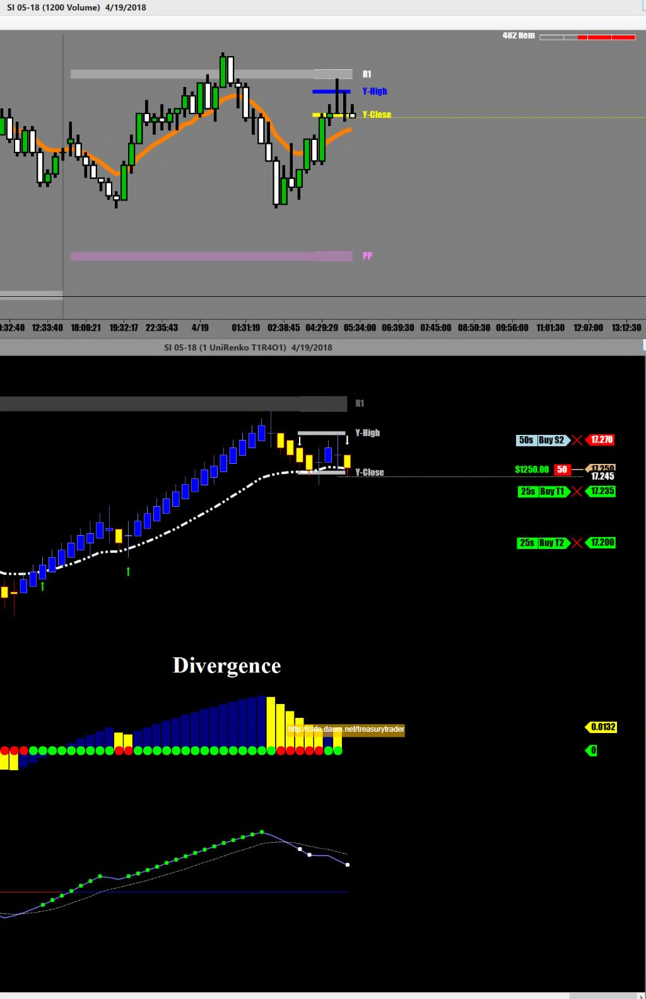
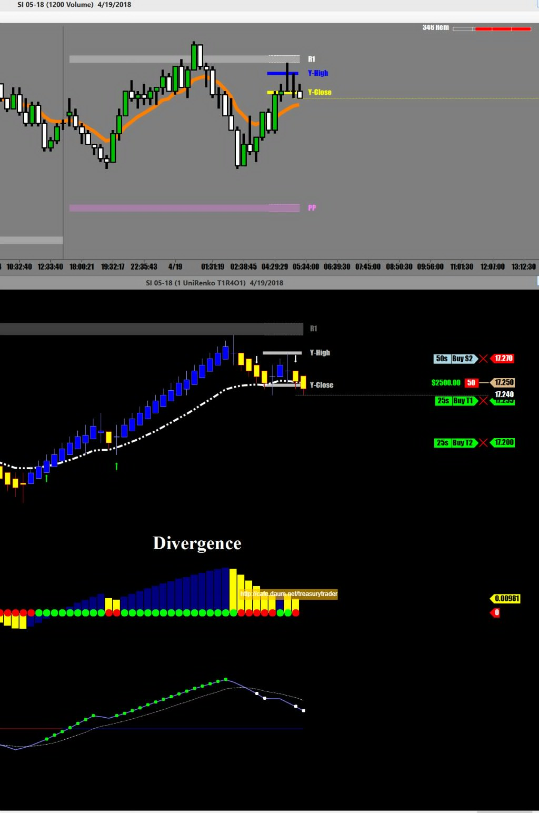
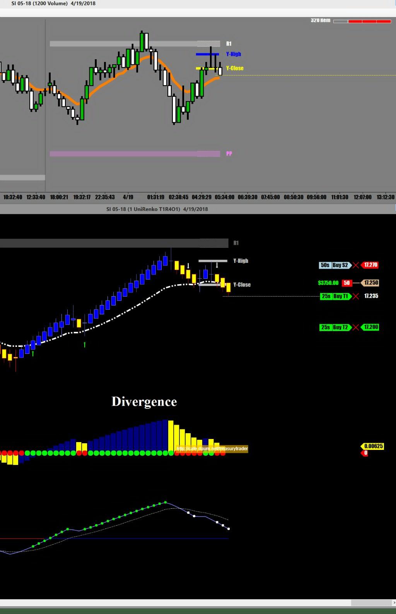
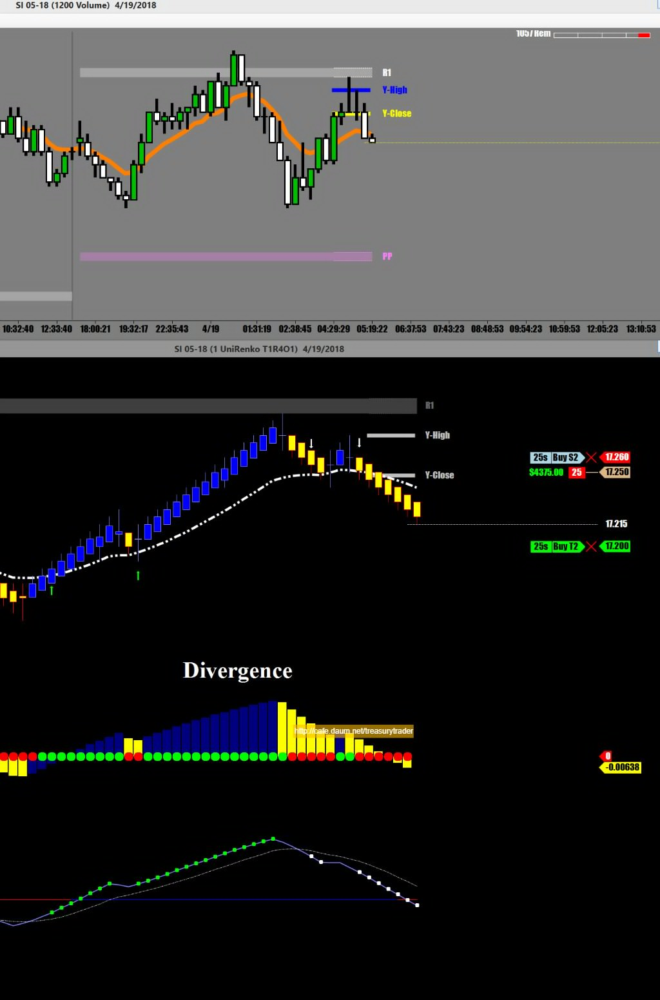
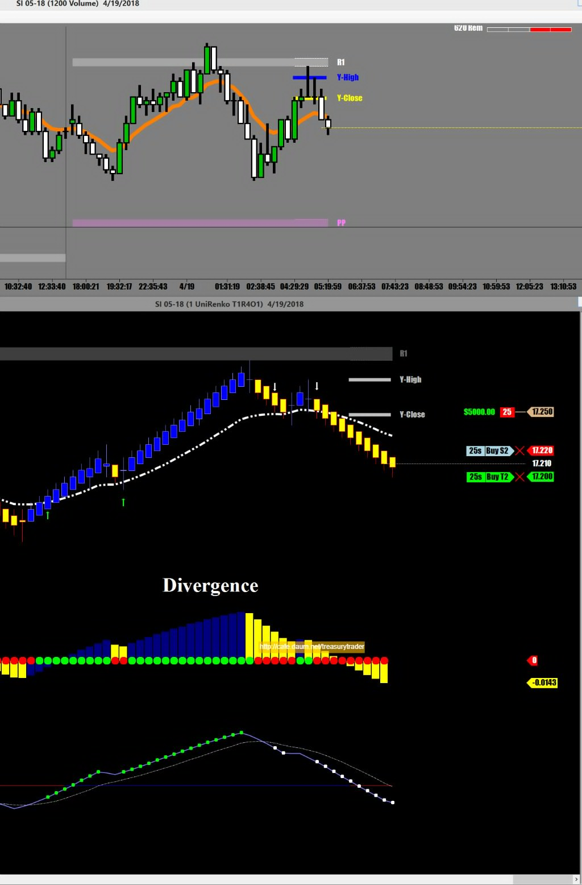
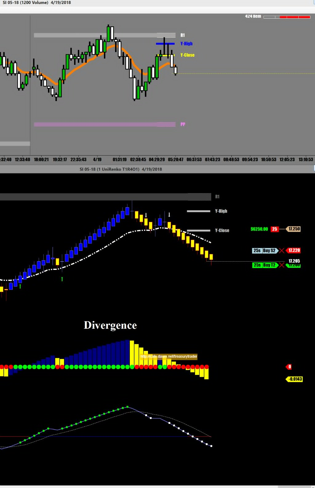
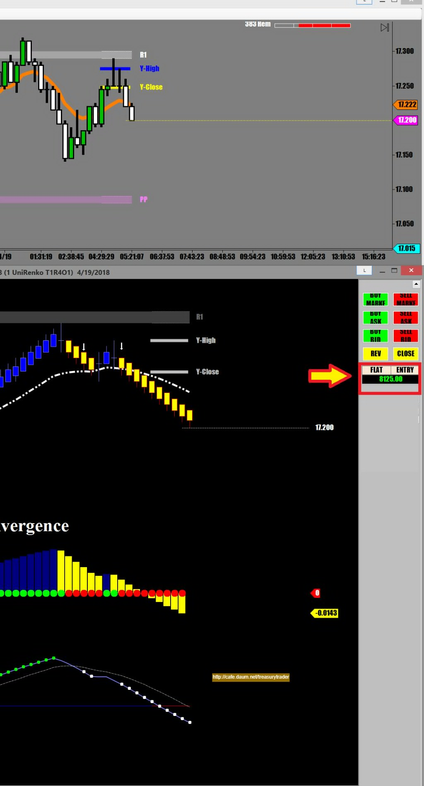
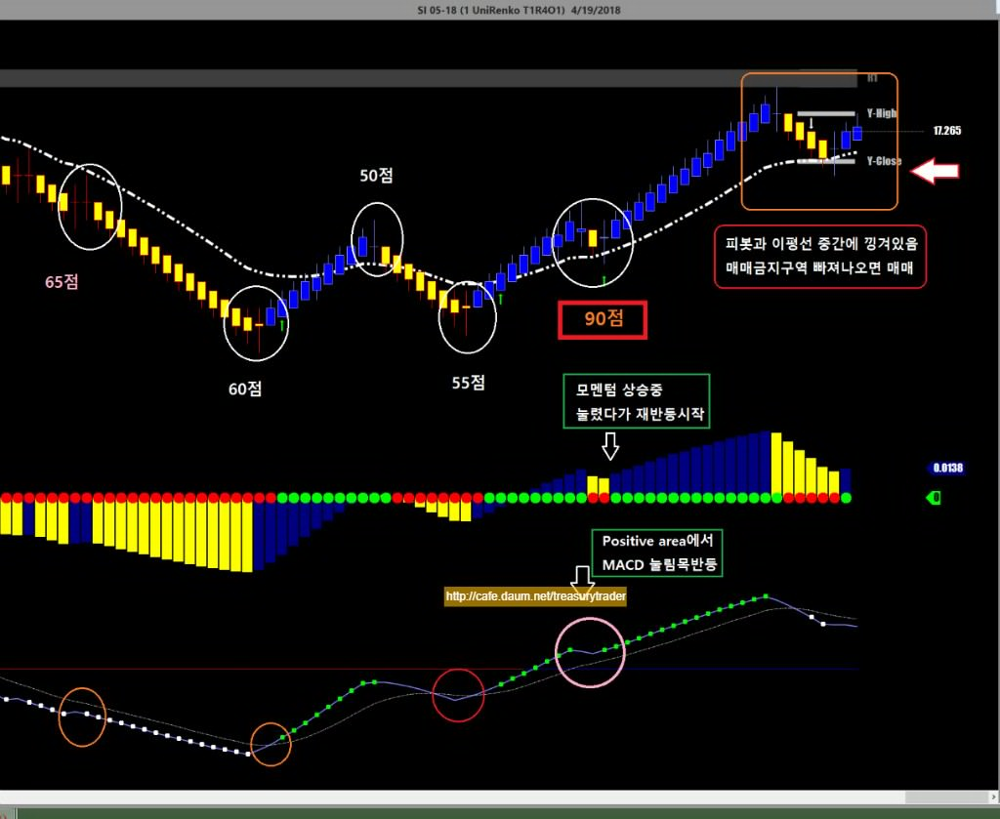

[매매일지] 실버 선물 매매 요약
글쓴이 : fjejetg 날짜 : 2018-06-24 (일) 02:39 조회 : 629
전에 제 카페에 올렸던 실버매매기록입니다 (http://cafe.daum.net/treasurytrader)
실버매매 궁금하신분들 보시라고..
실버는 현재 주봉상태를 보면 추세선 끝에 바짝 다가선 모습
어제의 상승탄력을 봤을 때 오늘은 추세선까지는 가지 않을까 싶음

하지만 일봉상으로 보면 어제의 긴 장대양봉뒤에 spinning top상태라서
양방향 모두 심하게 흔들릴 가능성도 있음
스피닝 탑 캔들은 어느쪽으로 갈지 방향이 결정되지 못했다는 신호임
신호 먼저 나오는쪽으로 매매할것임
오늘 첫번째 매매는
카페 매매기법에도 올려놨던
피봇에서 pin Bar와 Doji의 동시출현하는 아주좋은 매매신호 가 떨어지는 바람에
큰 물량으로 공략




절반 수익달성
이제 뒤쪽에 있던 손절을 앞으로 올려서 따라붙으며 수익 굳히기

손절주문을 계속 하락시키면서 따라붙기

물량이 많은 관계로 충분한 수익이 나고 있기 때문에 추격은 그만하고
적당한 선에서 나오기로 함


장중에 챠트를 지켜보다보면 수없이 많은 매매챤스가 나타나는데 그때마다 전부 다 들어갈 수는 없고
챤스때마다 나름대로 점수를 매겨서 자신이 정한 점수 이상의 신호일때만 들어가는게 좋다
또 어제도 설명했듯이 신호의 점수따라 매매물량을 조절하는것이 리스크 관리상 비교적 안전하다 할 수 있겠다

매매하면서 화면 캡쳐하느라 집중도 잘 안되고..ㅋ
그래서 지금 매매동영상으로 제작해보려고
이거 저거 프로그램들 시험중임
None of my business !!
fjejetg님이 작성하신 다른 글
[2018-06-24] 비트코인 (10)
[2018-06-20] 오늘 구리선물 매매 요약 (18)
[2018-06-19] 구리선물 매매 (10)
에더마스크 2018-06-24 (일) 07:59
좋은 글 감사합니다. 저는 마지막 점수 매긴 스샷에서 90점이라고 표시한 상황에서 털려요...
상방으로 잡고 포지션이 맞았는데도 90점 상황처럼 조금 떨어진다 싶으면 곧장 털고 다시 그 위에 올라가면 틱 손해 보면서 재매수 - -... 이젠 반복이 돼서 좀 더 들고가면서 안 털리기도 합니다만은...
그런데 90점으로 표시된 곳과 그 뒤에 매매금지구역이라 표시하신 곳이랑 뭐가 다른건가요?
글쓴이 2018-06-24 (일) 09:52
윗쪽으로는 전일 고점과 피봇상의 저항선(R1)이 코앞에 있고 현재 선물가는 어제 종가와 이평선 그리고 피봇상의 저항선(R1) 중간에 끼어 있습니다
이럴 땐 보통 그 자리에서 벗어난 후 들어가는게 안전합니다
다빈치2 2018-06-24 (일) 18:49
그런데 위와 같은 indicators를 활용했을 때 이론상 가능한 월 수익률이 얼마나 될까요?
원금 포함 재투자 연속으로 30일 동안 수익 가능한 배율이 궁금해집니다.
저는
선물 시작하면서 수익 낼 생각은 전혀 안하고,
학자로서, 과연 연구 대상이 되는지 알기 위해
지구상에 있는 모든 indicators와 그 조합, 통합, 연계 tools를 포함하여
관련 저서와 논문 연구서, 그리고 미국에서 있었던 webinars까지 약 700 도서를 줄기차게
읽고나서, "아, 저것은 헤매는 tools이지 해답도 정답도 아니구나"를 뼈저리게 느꼈었습니다.
변곡점이다, 방향성이다, 그 수 많은 용어들 또한 허무한 얘기구나,
그래서 나 혼자 새롭게 시작해보자 하는 마음으로 그 어떤 방식도 아닌
저 만의 만족스런 방식을 찾아 나섰습니다.
이유는 돈벌기보다는 분석하는 게 즐겁고 호기심이 많았기 때문입니다.
거의 대부분의 사람들은 news feeding이나 기타 외계 변수, 금리 실업률 등 온갖 잡설을 들먹이지만
결코 price action의 요인이 되지 못하는 것도 알아냈고요.
암튼, 금융 투자나 trading은 구구단 외운다고 수익내는 것이 아닌 것처럼
지구상의 거의 모든, 2천 여가지 indicators를 총 동원해도,
급등락, 변동의 폭을 알아내는 해답이 아니라는 것도 알아봤습니다.
모든 일은 각자 도생이고 자기 책임이기에, 알아서들 할 일이지만
젊은이들이 돈 잃고 상심하고 인생 힘들게 살아가는 일은 적었으면 하는 마음입니다.
글쓴이 2018-06-24 (일) 21:16
선물단타매매는 일종의 전투입니다
동원할 수 있는 모든 무기를 총동원해서 싸워 이겨야합니다
그리고 위에 제시한 매매기법은 보조지표를 이용한 매매가 아닙니다
보조지표는 말그대로 확인용으로만 사용합니다
틱챠트와 볼륨챠트를 통한 Price action과 피봇의 지지/저항 그리고 캔들패턴 등을 이용한 매매입니다
젊은이들이 돈잃고 상심하고 인생 힘들게 살고 있기 때문에
제대로 된 매매를 하시라고 30년 경험을 무료로 재능기부를 하는중입니다
다빈치2 2018-06-24 (일) 23:46
선물이든 옵션이든 혹은 주식. 기타 투자이든,
인간의 돈 심리는 하나이고 그 결과물은 가격으로 나오는 것이 당연하죠.
제가 찾은 방법은 틱이든 발륨이든 전혀 필요치 않는 것입니다.
발륨이 보이지 않는 환경도 많고, news feeding등과 다를 바 없는, 일종의 외계 변수로
보는 셈인데, 그런 요인이 가격 형성과 무관하다는 것이 저 나름의 분석 결과입니다.
제가 알고 싶은 것은 위와 같은 방식으로 trading을 하면 월 수익률이 얼마나 될까,
궁금할 뿐입니다. 챠트 기술, 무슨 기술, 기술적 분석..등등, 그 어떤 것도 필요치 않을 뿐더러
모월 모시에 최고점 찍고 그로부터 얼마 기간 횡보하다가 급강하 몇 포인트,
그리고 나서 상향 고점 얼마 찍고, 이런 식으로 가능해야 모름지기
price action을 아는 것이라 봅니다. 용어 인용이 아니라, 그게 무엇인지
행보도 알고 예측 가능해서 기계처럼 넣고 빼는 것을 말합니다.
머치쿨가이 2018-06-24 (일) 23:36
전 엑박으로나오네요
dollar 2018-06-25 (월) 02:07
차트 구경 잘 했습니다.
머리가 제법 나쁜지라...
위에 다른 분의 말씀이 무슨 뜻인지 이해가 되지는 않지만,
개인적인 소견으로는 인디게이터라는게 바람이 어디로 불지 예측하지는 못하지만,
현재 바람이 부는 방향을 가르켜 주는 깃발과 같은 역할이라고 보기 때문에
인디게이터 무용론에는 동의하지 않습니다.
트레이더는 그 바람에 잠깐 몸을 맏기기만 하면 되는거고...
데이터를 수집하고 분석해서 "비올 확율이 60% 입니다"라고 하는게 전문가라면,
무릎이 쑤실때 빨래를 걷는 사람이 트레이더라고 생각하고,
머리보다는 경험을 중요시 하는 편입니다.
때문에 개인적으로는 올려 주신 글에서 많은 부분이 도움이 되었습니다.
예를 든다면 평소 trailing stop이 실제로 돈을 벌어주는 부분이라고 생각하고 있는데
이런 부분을 다시 확인할 수 있었고 도움이 되었습니다.
시장에 참여자가 100명이면 매매방법도 100가지라고, 정답이 있는 것은 아니라지만,
여러가지로 확인하고 점검할 수 있어서 도움이 되고 있습니다.
시공속으로 2018-06-25 (월) 16:42
댓글에 허세 부리면서 쓴글은 무시해도 되요.
또찡찌슝 2018-06-25 (월) 09:04
잘 봤습니다. ㅎㅎ
ulabul 2018-06-25 (월) 10:21
선물공부 3개월 짜리 병아리입니다. 다 이해하지 못하지만 이해하려고 몇번씩 들여다 보고 있습니다.
차트가 복잡할 수록 매매는 꼬인다고 생각해서 최대한 심플하게 이해하려 노력하고 있습니다.
개인적으로 쪽지를 보내 여쭤볼까 했지만 이렇게 꾸준히 올려주신다면 게시글만이라도 감사히 받아먹겠습니다.